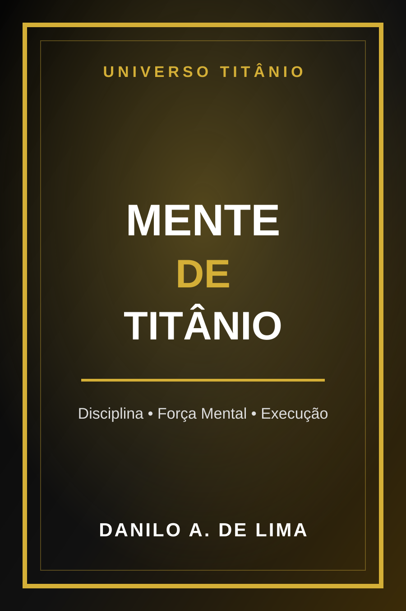

Disciplina prática
Como construir consistência mesmo em dias difíceis.
LIVRO DIGITAL
Um livro direto para fortalecer sua mentalidade, reduzir autossabotagem e transformar intenção em ação prática.

PARA QUEM É
Este livro é para quem precisa de clareza, disciplina e um plano mental mais firme para agir mesmo sem motivação.
CONTEÚDO
Como construir consistência mesmo em dias difíceis.
Como agir com menos desculpas e mais responsabilidade.
Como transformar leitura em decisão, rotina e resultado.